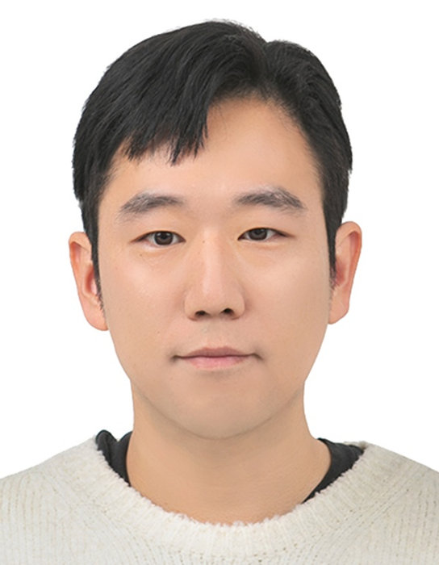

구성원Research Team
연구원, 대학원생, 학부생, 졸업생이 함께 혁신과 현장의 변화를 만듭니다.Researchers, graduate and undergraduate students, and alumni working together to drive innovation and real-world impact.

장승진
Chang, Seung Jin · 부교수Associate Professor
Energy System Prognostics & Diagnostics Lab을 이끌며 에너지 시스템 분야의 혁신적인 연구에 집중합니다. 리더십과 협업을 바탕으로 진단 기술을 발전시키고 미래 연구자의 성장을 돕습니다.Professor leads the Energy System Prognostics & Diagnostics Lab, focusing on innovative research in energy systems. Through leadership and collaboration, the lab advances diagnostic technologies and fosters the growth of future researchers.
연구 분야Research Areas
- 시간·주파수 분석 신호처리
- 송·배전 전력케이블 진단 및 진단기준 표준화
- AC/DC 그리드 아크 진단
- 전기자동차·로봇 내 배선 진단
- AI 기반 에너지 인프라 수명 예측
- Time–frequency signal processing
- Diagnosis of transmission and distribution cables and standardization of diagnostic criteria
- Arc diagnosis in AC/DC grids
- Wiring diagnosis in electric vehicles and robots
- AI-based life prediction for energy infrastructure
경력Career
- 2025.03 ~ 현재 · 중앙대학교 에너지시스템공학부, 부교수
- 2018.03 ~ 2025.02 · 국립 한밭대학교 전기공학과, 부교수
- 2017.10 ~ 2018.02 · 서울대학교 공학연구원, BK 박사후 연구원
- 2025.03 – present · Associate Professor, School of Energy Systems Engineering, Chung-Ang University
- 2018.03 – 2025.02 · Associate Professor, Department of Electrical Engineering, Hanbat National University
- 2017.10 – 2018.02 · BK Postdoctoral Researcher, Institute of Engineering Research, Seoul National University
학력Education
- 2017.08 · 연세대학교 전기전자공학부, 공학박사
- 2010.02 · 연세대학교 전기전자공학부, 공학사
- 2017.08 · Ph.D., School of Electrical and Electronic Engineering, Yonsei University
- 2010.02 · B.S., School of Electrical and Electronic Engineering, Yonsei University
- 이메일E-mail
- jpromo8@cau.ac.kr
- 전화Tel.
- 02-820-5233
- YouTube
- @EnergySystemPDLab
구성원 모집Join Us
박사후연구원, 석·박사과정 대학원생, 학부 연구생을 모집합니다.We are recruiting postdoctoral researchers, M.S./Ph.D. students and undergraduate researchers.